Power to detect QTLs in single cell data
Table of Contents
Introduction
Our goal here is to use bulk RNA-Seq data on iPSCs from 63 individuals to simulate single cell RNA-Seq data in the same individuals and estimate power to detect mean and variance-effect QTLs.
Zappia et al. 2017 give a method to generate scRNA-Seq data from scRNA-Seq data. Along the way, they use a number of distributions to validate that their generated data captures the relevant aspects of the generative process.
Distribution of library sizes
def plot_lib_sizes(lib_sizes, title, filename): plt.clf() plt.hist(lib_sizes, bins=30) plt.xlabel('Total UMI count per cell') plt.ylabel('Number of cells') plt.title(title) plt.savefig(filename) def plot_lib_sizes_by_individual(umi, annotations, output_dir): lib_sizes = pd.DataFrame(list(zip(annotations['chip_id'], umi.sum(axis=0)))) for k, g in lib_sizes.groupby(0): plot_lib_sizes(g.loc[:,1], k, '{}/{}.png'.format(output_dir, k))
plot_lib_sizes_by_individual(
umi,
annotations,
'/home/aksarkar/projects/singlecell-qtl/analysis/figure/power.org/lib-sizes')
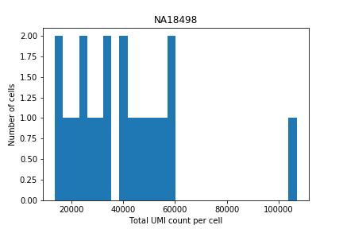
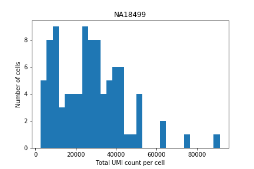
 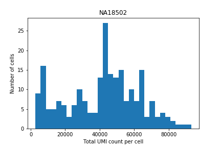
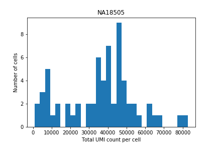
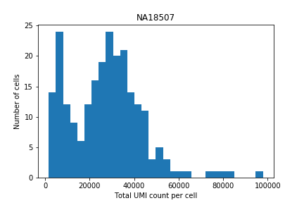
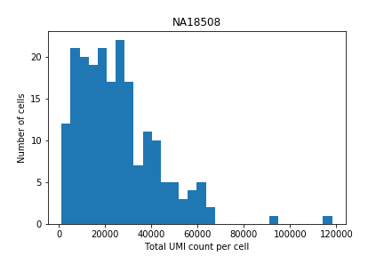
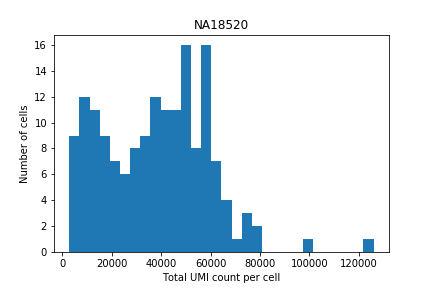
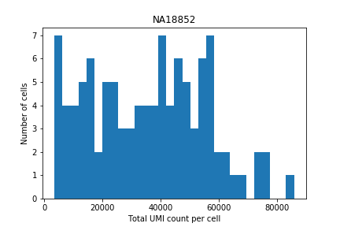
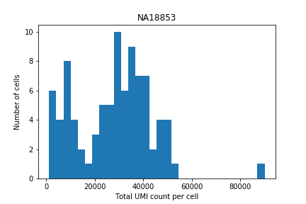
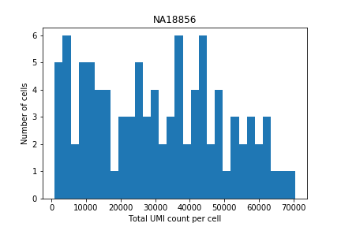
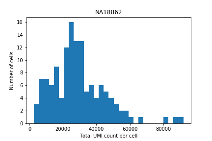
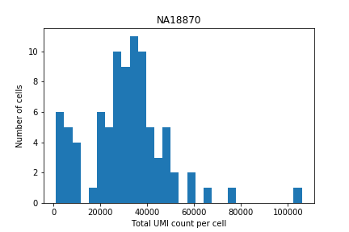
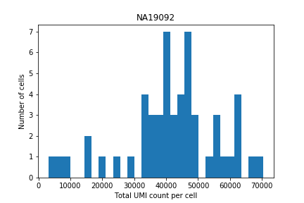
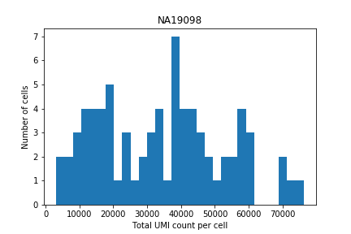
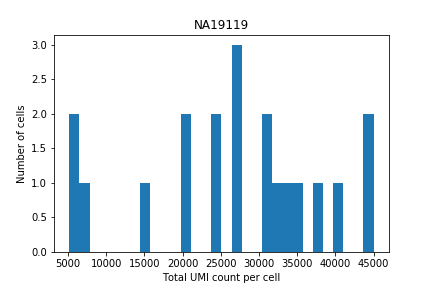
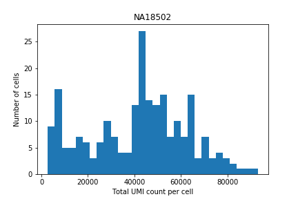
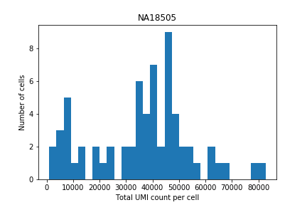
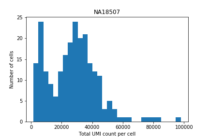
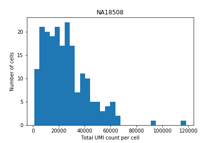
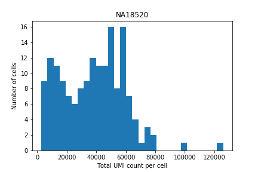
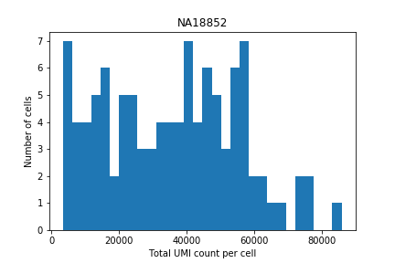
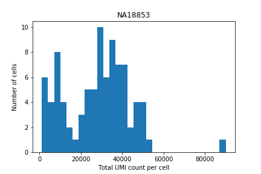
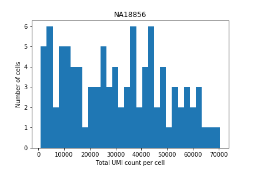
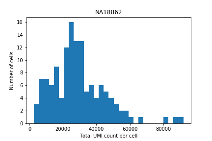
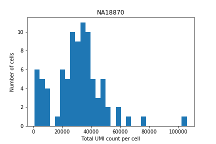
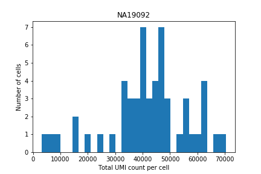
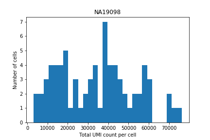
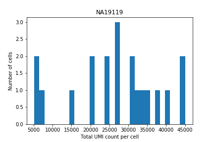
 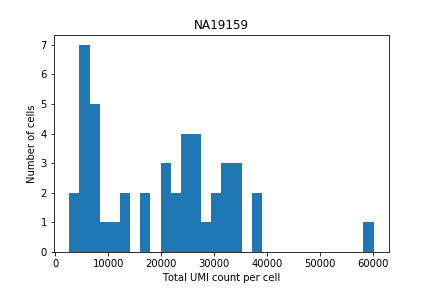
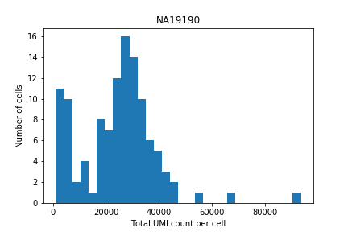
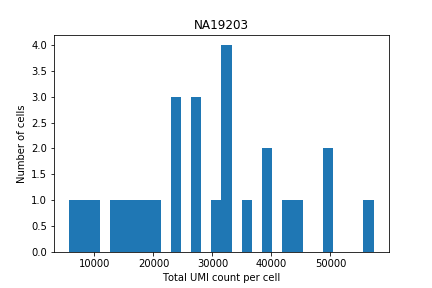
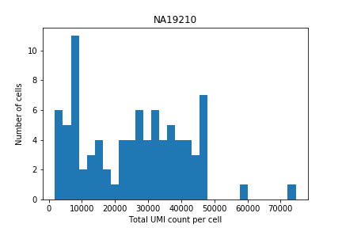
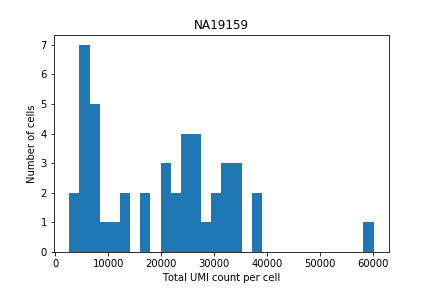
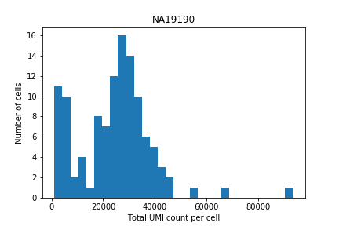
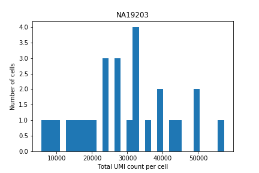
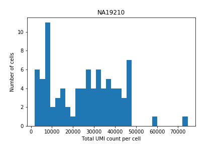

Distribution of moments
moments = (tpm(umi.loc[keep], total_exon_length_kb, log2=True) .transpose() .groupby(by=annotations['chip_id'].values) .agg([np.mean, np.var]))
def plot_moments(moments, title, filename): plt.clf() fig, ax = plt.subplots(1, 2) ax[0].hist(moments.loc[:,'mean'], bins=30, histtype='step') ax[0].set_xlabel('Mean $\log_2(TPM + 1)$') ax[0].set_ylabel('Number of genes') ax[1].hist(moments.loc[:,'var'], bins=30, histtype='step') ax[1].set_xlabel('Variance $\log_2(TPM + 1)$') fig.suptitle(title) plt.tight_layout(rect=[0, 0, 1, 0.95]) plt.savefig(filename) plt.close() def plot_moments_by_individual(moments, output_dir): for ind, row in moments.iterrows(): plot_moments(row, ind, '{}/{}.png'.format(output_dir, ind))
plot_moments_by_individual(moments, '/home/aksarkar/projects/singlecell-qtl/analysis/figure/power.org/moments/')
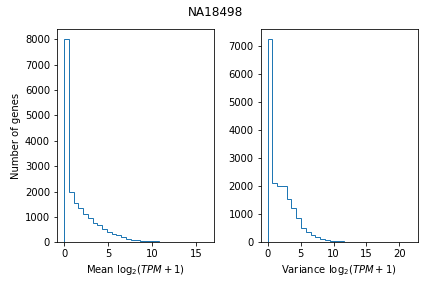
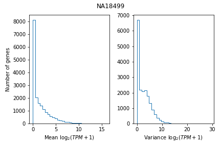
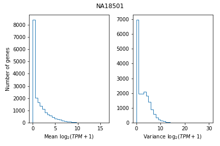
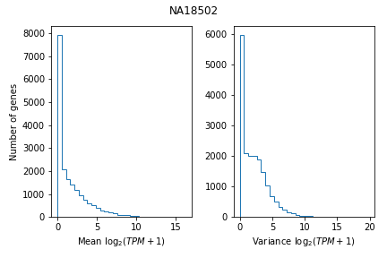
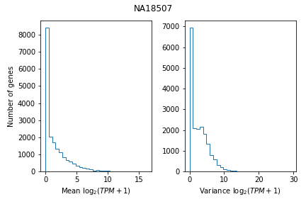
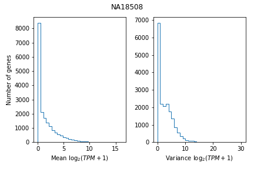
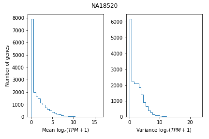
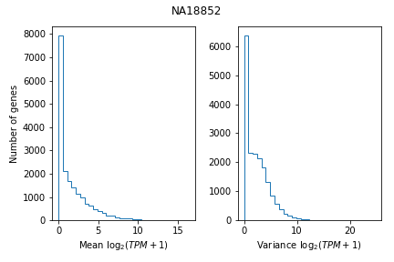
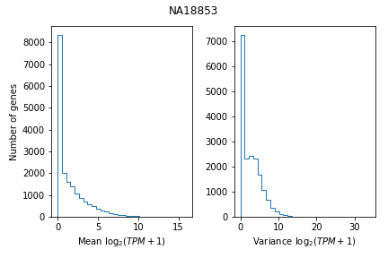
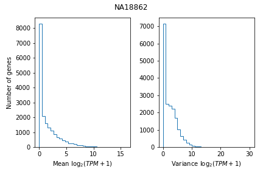
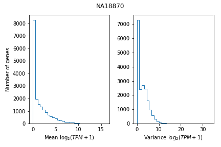
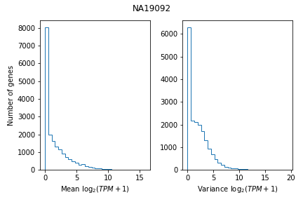
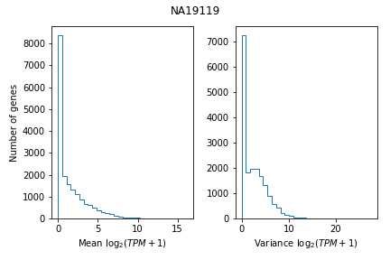
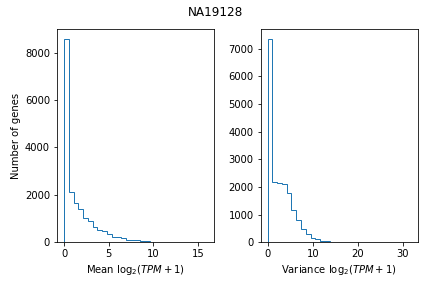
 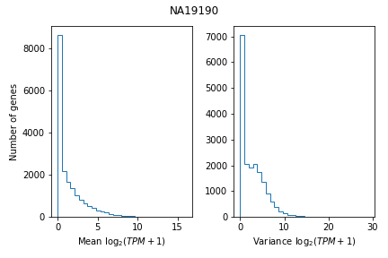
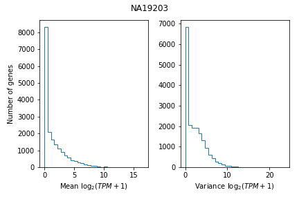
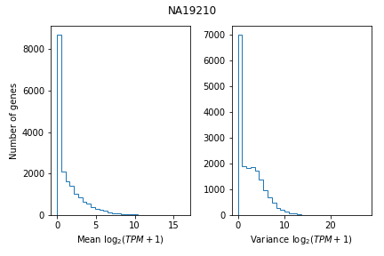
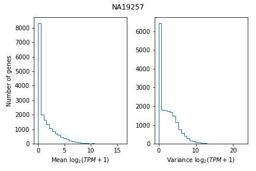
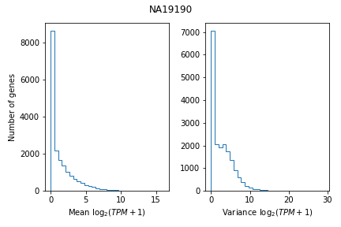
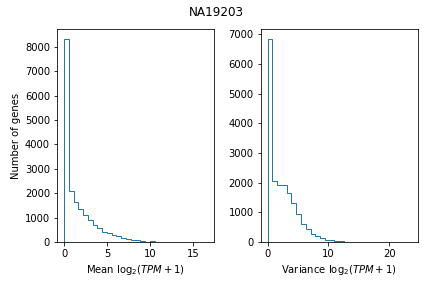
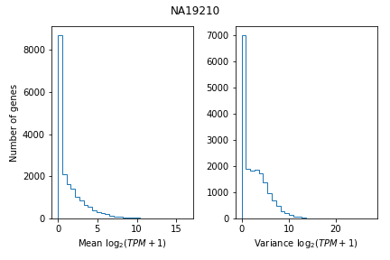
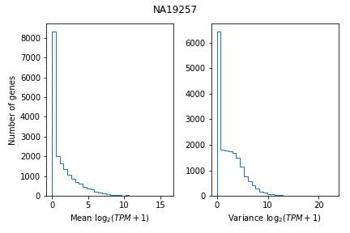
Mean-variance relationship
def plot_mean_var(moments, title, filename): plt.clf() plt.hexbin(moments.loc[:,'mean'], moments.loc[:,'var'], cmap=colorcet.cm['blues'], gridsize=10) plt.xlabel('Mean $\log_2(\mathrm{TPM} + 1)$') plt.ylabel('Variance $\log_2(\mathrm{TPM} + 1)$') cb = plt.colorbar() cb.set_label('Number of genes') plt.title(title) plt.savefig(filename) def plot_mean_var_by_individual(moments, output_dir): for ind, row in moments.iterrows(): plot_mean_var(row, ind, '{}/{}.png'.format(output_dir, ind))
plot_mean_var_by_individual(
moments,
'/home/aksarkar/projects/singlecell-qtl/analysis/figure/power.org/mean-var/')
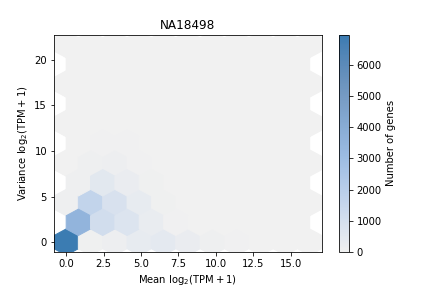
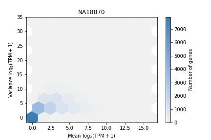
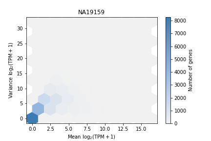
 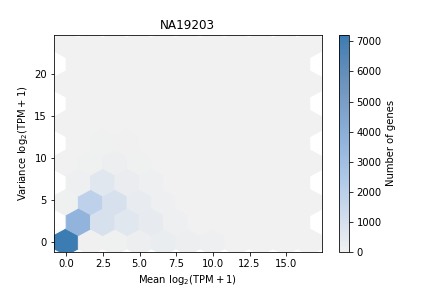
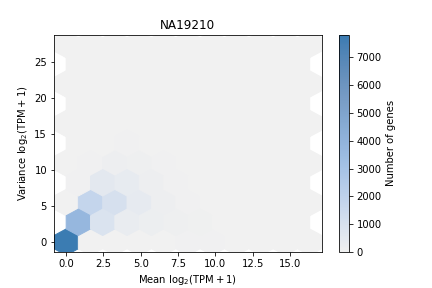
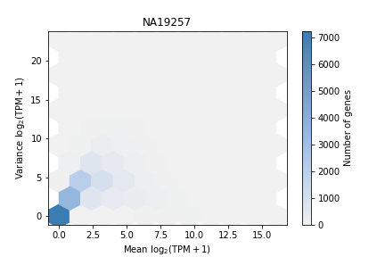
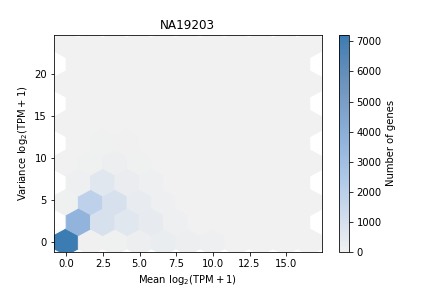
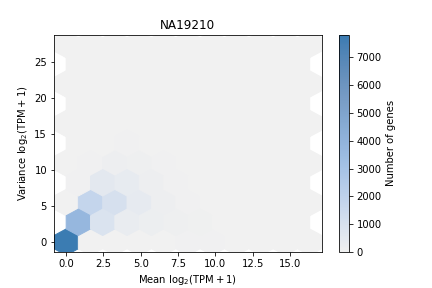
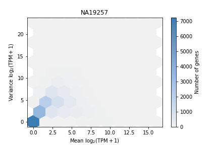
Mean-zero relationship
def nonmissingness(umi, annotations): return (umi.astype(bool) .groupby(by=annotations['chip_id'].values, axis=1) .agg(lambda x: x.values.sum(axis=1) / x.shape[1])) def plot_mean_zero(moments, nonmissing, output_file): plt.clf() plt.hexbin(moments.loc[:,'mean'], nonmissing.loc[:,'mean'], cmap=colorcet.cm['blues'], gridsize=10) cb = plt.colorbar() cb.set_label('Number of genes') plt.xlabel('Mean $\log_2(TPM + 1)$') plt.ylabel('Proportion of cells with non-zero UMI count') plt.savefig(output_file) plt.close() def plot_mean_zero_by_individual(moments, umi, annotations, output_dir): nonmissing = nonmissingness(umi, annotations) for ind, row in moments.iterrows(): m1, m2 = row.align(nonmissing.loc[:,ind], level=0, join='inner') plot_mean_zero(m1, m2, '{}/{}.png'.format(output_dir, ind))
plot_mean_zero_by_individual(
moments,
umi,
annotations,
'/home/aksarkar/projects/singlecell-qtl/analysis/figure/power.org/mean-zero')
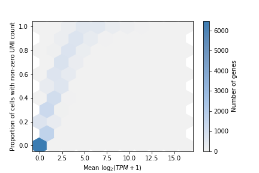 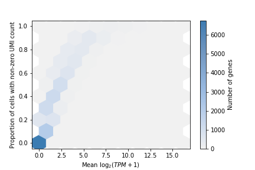 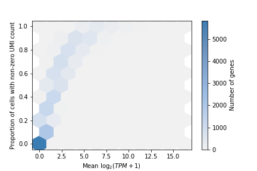 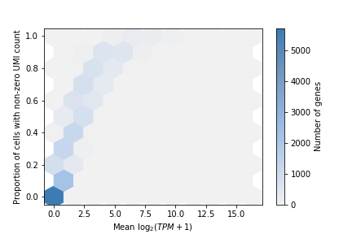 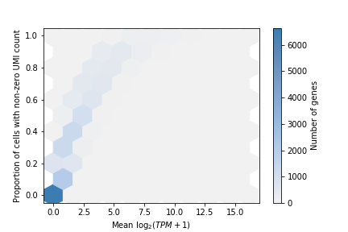 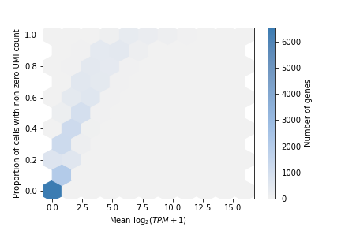 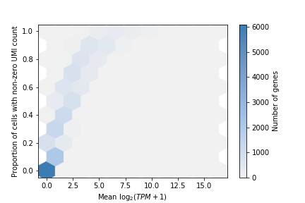
Unlike Zappia et al., we can investigate the dropout rate as a function of bulk RNA-Seq level.
def plot_bulk_mean_zero_by_individual(bulk, umi, annotations, output_dir): bulk = tpm(bulk, total_exon_length_kb, log2=True) bulk['gene'] = bulk.index bulk['mean'] = 'mean' bulk = bulk.set_index(['gene', 'mean']) plot_mean_zero_by_individual(bulk.transpose(), umi, annotations, output_dir)
plot_bulk_mean_zero_by_individual(
bulk,
umi,
annotations,
'/home/aksarkar/projects/singlecell-qtl/analysis/figure/power.org/bulk-mean-zero')

Sample from bulk RNA-Seq to generate scRNA-Seq
Focus on one individual (NA18507), and generate a new set of single cells by drawing counts to match the total UMI counts of the original cells
def _generate_cells(individual, bulk, umi, annotations): for cell_count in umi.loc[:,(annotations['chip_id'] == individual).values].sum(): yield np.random.binomial(n=bulk[individual], p=cell_count / bulk[individual].sum()) def generate_cells(individual, bulk, umi, annotations): return (pd.DataFrame(list(_generate_cells(individual, bulk, umi, annotations))) .transpose() .set_index(bulk.index))
generated_umi = generate_cells('NA18507', bulk, umi, annotations) generated_moments = (tpm(generated_umi, total_exon_length_kb, log2=True) .transpose() .groupby(np.zeros(generated_umi.shape[1])) .agg([np.mean, np.var])) generated_moments.index = ['syn0']
plot_moments( generated_moments.iloc[0], 'Synthetic NA18507', '/home/aksarkar/projects/singlecell-qtl/analysis/figure/power.org/moments/NA18507-generated.png') plot_mean_var( generated_moments.iloc[0], 'Synthetic NA18507', '/home/aksarkar/projects/singlecell-qtl/analysis/figure/power.org/mean-var/NA18507-generated.png')